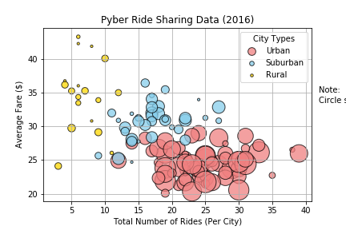
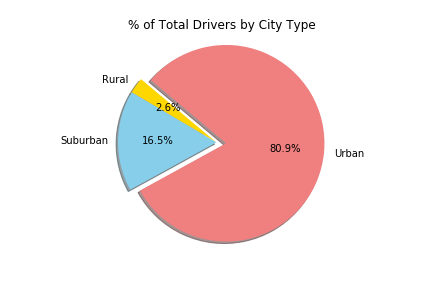
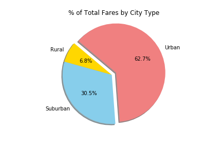
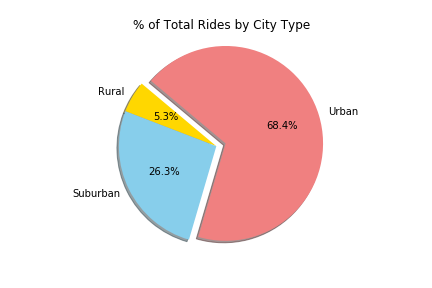

Using Matplotlib to Visualize Data
For this project, I was given a set of data relating to a fictional ride-sharing service. I \
was tasked with creating a series of plots to visualize the data presented. The plots are shown below:

A bubble chart displaying the relationship between average fares and total rides per city, along with the total driver count in each city environment

A pie chart showing the proportion of drivers between each city environment

A pie chart showing the proportion of fares between each city environment

A pie chart showing the proportion of rides between each city environment